Decodificando runas con matrices
Cuando comencé a leer El Hobbit de Tolkien, en la primera página se mostraba en inglés el título de libro junto con un subtítulo en runas germánicas:
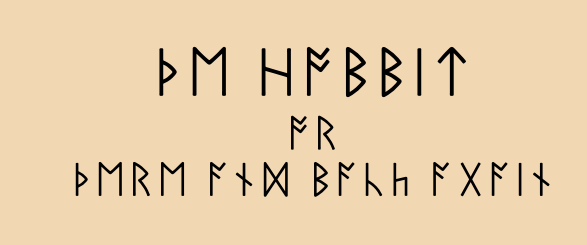
Luego nos cuentan cómo las runas se escribían mediante cortes o incisiones en madera, para después decirnos que en el Mapa de Thror hay una mano que señala a la puerta secreta y debajo hay una inscripción:
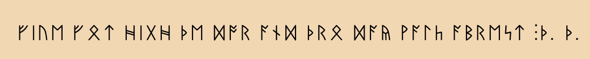
Donde las últimas dos runas son las iniciales de Thror y Thrain. Al sureste del mapa también se lee:
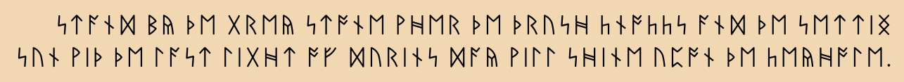
Notemos que aunque no estemos familiarizados con las runas, es posible determinar el significado de los dos enunciados anteriores, apoyadonos únicamente en la similitud de estas con nuestro alfabeto y al contexto que se envuelve con el lenguaje inglés usual.
Se podría decir que la traducción de un lenguaje a otro es un ejericicio de decodificación.
Lo anterior puede ser motivación para estudiar algunos ejemplos de criptografía, la cual es el arte de codificar mensajes para ocultar su significado y que este pueda ser decodificado una vez recibido el mensaje. Existen muchas formas de hacer esto. Por ejemplo, si recorremos el abecedario ciclicamente 2 letras:
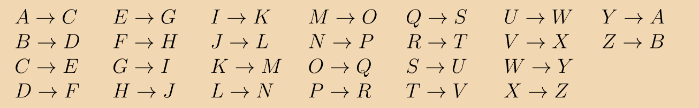
Palabras arbitrarias como LEY o SECRETO se codifican como NGA o UGETGVQ, respectivamente.
Ahora, quisieramos utilizar matrices numéricas para codificar un mensaje, para poder hacerlo, hay que asignar valores numéricos a nuestro alfabeto. La asiganción más obvia sería asignar los valores del 1 al 26 para nuestros 26 caracteres posibles.
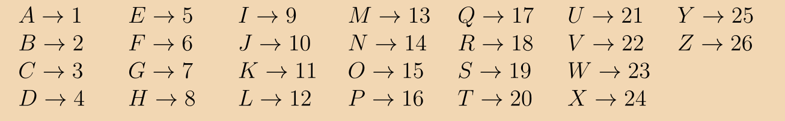
Supongamos que queremos codificar el mensaje HELLO WORLD. Para esto, vamos a dividir el mensaje en partes de dos caracteres, es decir:
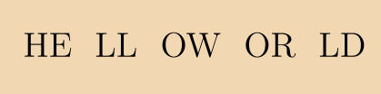
Ahora, vamos a asignar un vector columna de dos entradas a cada parte del mensaje, las entradas son los valores numéricos asignados a cada letra. Los vectores resultantes son:
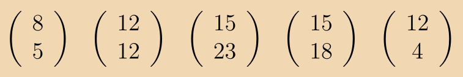
Finalmente, hay que elegir una llave para codificar el mensaje, esta llave solo debe conocerla el receptor del mensaje. Como ya lo mencionamos, nuestra llave será una matriz de 2 por 2. Hay que elegirla invertible, esto es fundamental, como veremos a la hora de decodificar el mensaje. Supongamos que es:
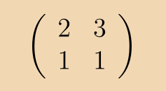
Para codificar el mensaje basta con multiplicar por la izquierda a cada vector por la matriz llave. Así, el mensaje codificado serán los vectores:
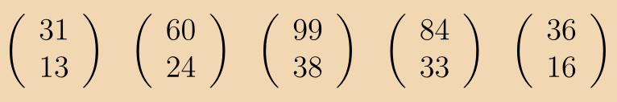
Cuando el receptor reciba este mensaje, lo único que tendrá que hacer para decodificarlo será multiplicar por la izquierda a cada vector por la inversa de la matriz llave, de la cual es poseedor. Finalmente, al reasignar los valores alfabéticos a los valores numéricos, el mensaje se revelará al receptor.
Es importante observar que para esta codificación no hubo ambiguedad en la asignación de los valores numéricos a los caracteres, pues fue una correspondencia biunívoca entre ellos. Además, al ser la matriz llave invertible, la recuperación de los vectores originales también pudo ocurrir sin errores. Es bien sabido que cuando es posible que haya interferencia en la transmisión de un mensaje, existen códigos(los cuales no son más que un subconjunto apropiado de palabras) para corregir errores en la transmisión. Por supuesto que esto reduce la variedad de mensajes que pueden ser transmitidos.
Como ejercicio final, utilizaremos una matriz llave de 3 por 3 para codificar el mensaje con runas inscrito al comienzo del texto:
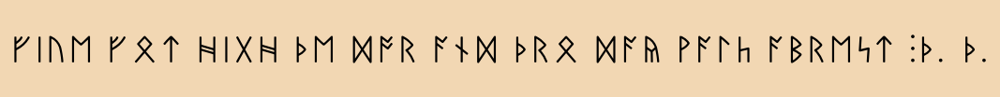
Lo primero es asignar valores numéricos a las runas, para complicar la codificación, ahora eligiremos un orden descendente.
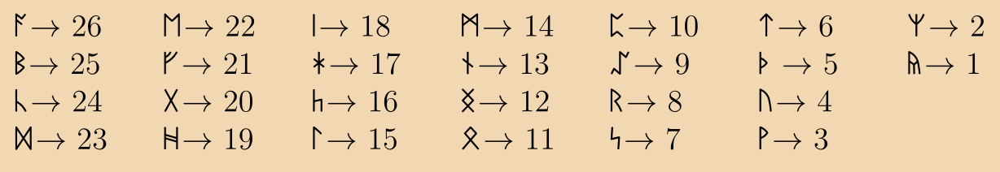
Separemos el mensaje ahora en partes de tres caracteres:
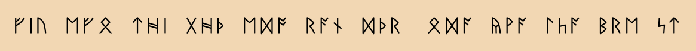
Asignemos vectores columna de tres entradas a cada parte. Dado que la última parte solo tiene dos caracteres, colocaremos una entrada igual a 0.
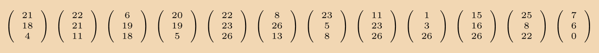
Elegimos la matriz invertible:
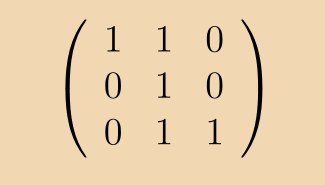
Al multiplicar por la izquierda, el mensaje codificado queda de la siguiente forma:
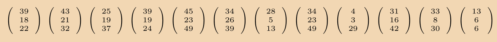